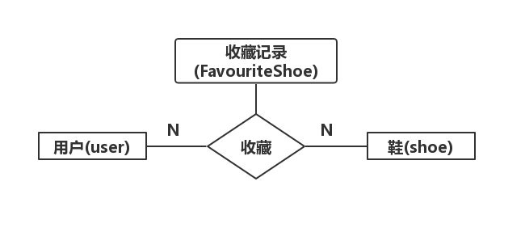
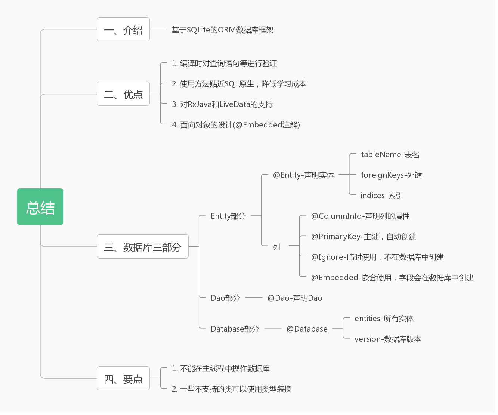

介绍 官方文档：Room 官方教程 SQLite教程
谷歌官方的介绍：
The Room persistence library provides an abstraction layer over SQLite to allow for more robust database access while harnessing the full power of SQLite.
简单来说：Room 是一个基于 SQLite 的强大数据库框架。
Room 优点：
使用编译时注解，能够对 @Query 和 @Entity 里面的 SQL 语句等进行验证。
与 SQL 语句的使用更加贴近，能够降低学习成本。
对 RxJava 2 的支持（大部分都 Android 数据库框架都支持），对 LiveData 的支持。
@Embedded 能够减少表的创建。
实战 
我们的目标挺简单的，三张表，用户表、鞋表和收藏记录表，用户表和鞋表存在多对多的关系，确定好目标之后，正式开始我们的实战之旅了。
第一步 添加依赖 模块层的 build.gradle 添加：
1 2 3 4 5 6 7 8 9 10 11 apply plugin: 'kotlin-kapt' dependencies { // ... 省略无关 // room implementation "androidx.room:room-runtime:$rootProject.roomVersion" implementation "androidx.room:room-ktx:$rootProject.roomVersion" kapt "androidx.room:room-compiler:$rootProject.roomVersion" androidTestImplementation "androidx.room:room-testing:$rootProject.roomVersion" }
项目下的 build.gradle 添加：
1 2 3 4 ext { roomVersion = '2.1.0-alpha06' //... 省略无关 }
第二步 创建表（实体） 这里我们以用户表和收藏记录表为例，用户表：
1 2 3 4 5 6 7 8 9 10 11 12 13 14 15 /** * 用户表 */ @Entity(tableName = "user") data class User( @ColumnInfo(name = "user_account") val account: String // 账号 , @ColumnInfo(name = "user_pwd") val pwd: String // 密码 , @ColumnInfo(name = "user_name") val name: String , @Embedded val address: Address // 地址 , @Ignore val state: Int // 状态只是临时用，所以不需要存储在数据库中 ) { @PrimaryKey(autoGenerate = true) @ColumnInfo(name = "id") var id: Long = 0 }
收藏记录表：
1 2 3 4 5 6 7 8 9 10 11 12 13 14 15 16 17 18 19 /** * 喜欢的球鞋 */ @Entity( tableName = "fav_shoe" , foreignKeys = [ForeignKey(entity = Shoe::class, parentColumns = ["id"], childColumns = ["shoe_id"]) , ForeignKey(entity = User::class, parentColumns = ["id"], childColumns = ["user_id"]) ],indices = [Index("shoe_id")] ) data class FavouriteShoe( @ColumnInfo(name = "shoe_id") val shoeId: Long // 外键 鞋子的id , @ColumnInfo(name = "user_id") val userId: Long // 外键 用户的id , @ColumnInfo(name = "fav_date") val date: Date // 创建日期 ) { @PrimaryKey(autoGenerate = true) @ColumnInfo(name = "id") var id: Long = 0 }
对于其中的一些注解，你可能不是很明白，解释如下：
注解
说明
@Entity
声明这是一个表（实体），主要参数：tableName-表名、foreignKeys-外键、indices-索引。
@ColumnInfo
主要用来修改在数据库中的字段名。
@PrimaryKey
声明该字段主键并可以声明是否自动创建。
@Ignore
声明某个字段只是临时用，不存储在数据库中。
@Embedded
用于嵌套，里面的字段同样会存储在数据库中。
最后一个可能解释的不明，我们直接看例子就好，如我们的用户表，里面有一个变量 address，它是一个 Address 类：
1 2 3 4 5 6 /** * 地址 */ data class Address( val street:String,val state:String,val city:String,val postCode:String )
通常情况下，如果我们想这些字段存储在数据库中，有两种方法：
重新创建一个表进行一对一关联，但是多创建一个表显得麻烦。
在用户表中增加字段，可是使用第二种方式映射出来的对象又显得不那么面向对象。
@Embedded 解决了第二种方式中问题，既不需要多创建一个表，又能将数据库中映射的对象看上去面向对象。
放上 Shoe 表，后面会用到：
1 2 3 4 5 6 7 8 9 10 11 12 13 14 15 /** * 鞋表 */ @Entity(tableName = "shoe") data class Shoe( @ColumnInfo(name = "shoe_name") val name: String // 鞋名 , @ColumnInfo(name = "shoe_description") val description: String// 描述 , @ColumnInfo(name = "shoe_price") val price: Float // 价格 , @ColumnInfo(name = "shoe_brand") val brand: String // 品牌 , @ColumnInfo(name = "shoe_imgUrl") val imageUrl: String // 图片地址 ) { @PrimaryKey(autoGenerate = true) @ColumnInfo(name = "id") var id: Long = 0 }
第三步 创建 Dao 有了数据库，我们现在需要建立数据处理的方法，就是数据的增删查改。如果想声明一个 Dao，只要在抽象类或者接口加一个 @Dao 注解就行。
增
用到增的地方有很多，Demo 中本地用户的注册、鞋子集合的新增和收藏的新增，这里我们选择具有代表性的 shoeDao：
1 2 3 4 5 6 7 8 9 10 11 12 13 14 15 /** * 鞋子的方法 */ @Dao interface ShoeDao { // 省略... // 增加一双鞋子 @Insert(onConflict = OnConflictStrategy.REPLACE) fun insertShoe(shoe: Shoe) // 增加多双鞋子 // 除了List之外，也可以使用数组 @Insert(onConflict = OnConflictStrategy.REPLACE) fun insertShoes(shoes: List<Shoe>) }
删
用法与 @Insert 类似，同样以 ShoeDao 为例：
1 2 3 4 5 6 7 8 9 10 11 12 13 14 15 /** * 鞋子的方法 */ @Dao interface ShoeDao { // 省略... // 删除一双鞋子 @Delete fun deleteShoe(shoe: Shoe) // 删除多个鞋子 // 参数也可以使用数组 @Delete fun deleteShoes(shoes:List<Shoe>) }
改
用法同样与 @Insert 类似：
1 2 3 4 5 6 7 8 9 10 11 12 13 14 15 /** * 鞋子的方法 */ @Dao interface ShoeDao { // 省略... // 更新一双鞋 @Update fun updateShoe(shoe:Shoe) // 更新多双鞋 // 参数也可以是集合 @Update fun updateShoes(shoes:Array<Shoe>) }
查
简单查询
1 2 3 4 5 6 7 8 9 10 11 12 13 14 15 16 17 18 19 20 21 22 23 24 25 26 27 28 29 @Dao interface ShoeDao { // 查询一个 @Query("SELECT * FROM shoe WHERE id=:id") fun findShoeById(id: Long): Shoe? // 查询多个 通过品牌查询多款鞋 @Query("SELECT * FROM shoe WHERE shoe_brand=:brand") fun findShoesByBrand(brand: String): List<Shoe> // 模糊查询 排序 同名鞋名查询鞋 @Query("SELECT * FROM shoe WHERE shoe_name LIKE :name ORDER BY shoe_brand ASC") fun findShoesByName(name:String):List<Shoe> // 配合LiveData 返回所有的鞋子 @Query("SELECT * FROM shoe") fun getAllShoesLD(): LiveData<List<Shoe>> // 配合LiveData 通过Id查询单款鞋子 @Query("SELECT * FROM shoe WHERE id=:id") fun findShoeByIdLD(id: Long): LiveData<Shoe> // 配合RxJava 通过Id查询单款鞋子 @Query("SELECT * FROM shoe WHERE id=:id") fun findShoeByIdRx(id: Long): Flowable<Shoe> // 省略... }
查询多个的时候，可以返回 List 和数组，还可以配合 LiveData 和 RxJava 2。当然，更多的查询可以参考 SQL 语法。
复合查询
1 2 3 4 5 6 7 8 9 10 11 12 @Dao interface ShoeDao { // 省略... // 根据收藏结合 查询用户喜欢的鞋的集合 内联查询 @Query( "SELECT shoe.id,shoe.shoe_name,shoe.shoe_description,shoe.shoe_price,shoe.shoe_brand,shoe.shoe_imgUrl " + "FROM shoe " + "INNER JOIN fav_shoe ON fav_shoe.shoe_id = shoe.id " + "WHERE fav_shoe.user_id = :userId" ) fun findShoesByUserId(userId: Long): LiveData<List<Shoe>> }
第四步 创建数据库 创建一个数据库对象是一件非常消耗资源，使用单例可以避免过多的资源消耗。
1 2 3 4 5 6 7 8 9 10 11 12 13 14 15 16 17 18 19 20 21 22 23 24 25 26 27 28 29 30 31 32 33 34 35 36 37 38 39 40 41 /** * 数据库文件 */ @Database(entities = [User::class,Shoe::class,FavouriteShoe::class],version = 1,exportSchema = false) abstract class AppDataBase:RoomDatabase() { // 得到UserDao abstract fun userDao():UserDao // 得到ShoeDao abstract fun shoeDao():ShoeDao // 得到FavouriteShoeDao abstract fun favouriteShoeDao():FavouriteShoeDao companion object{ @Volatile private var instance:AppDataBase? = null fun getInstance(context:Context):AppDataBase{ return instance?: synchronized(this){ instance?:buildDataBase(context) .also { instance = it } } } private fun buildDataBase(context: Context):AppDataBase{ return Room .databaseBuilder(context,AppDataBase::class.java,"jetPackDemo-database") .addCallback(object :RoomDatabase.Callback(){ override fun onCreate(db: SupportSQLiteDatabase) { super.onCreate(db) // 读取鞋的集合 val request = OneTimeWorkRequestBuilder<ShoeWorker>().build() WorkManager.getInstance(context).enqueue(request) } }) .build() } } }
@Database 注解声明当前是一个数据库文件，注解中 entities 变量声明数据库中的表（实体），以及其他的例如版本等变量。同时，获取的 Dao也必须在数据库类中。完成之后，点击 build 目录下的 make project，系统就会自动帮我创建 AppDataBase 和 xxxDao 的实现类。
第五步 简要封装 这里有必要提醒一下，在不使用 LiveData 和 RxJava 的前提下，Room 的操作是不可以放在主线程中的。这里选择比较有示范性的 UserRepository：
1 2 3 4 5 6 7 8 9 10 11 12 13 14 15 16 17 18 19 20 21 22 23 24 25 26 27 28 /** * 用户处理仓库 */ class UserRepository private constructor(private val userDao: UserDao) { //... /** * 登录用户 本地数据库的查询 */ fun login(account: String, pwd: String):LiveData<User?> = userDao.login(account,pwd) /** * 注册一个用户 本地数据库的新增 */ suspend fun register(email: String, account: String, pwd: String):Long { return withContext(IO) { userDao.insertUser(User(account, pwd, email)) } } companion object { @Volatile private var instance: UserRepository? = null fun getInstance(userDao: UserDao): UserRepository = // ... } }
register() 方法是一个普通方法，所以它需要在子线程使用，如代码所见，通过协程实现。
更多 除了上面的基本使用技巧之外，还有一些不常用的知识需要我们了解。
类型转换器 我们都知道，SQLite 支持的类型有：NULL、INTEGER、REAL、TEXT 和 BLOB，对于 Data 类，SQLite 还可以将其转化为 TEXT、REAL 或者 INTEGER，如果是 Calendar 类呢？Room 为你提供了解决方法，使用 @TypeConverter 注解，我们使用谷歌官方 Demo-SunFlower 例子：
1 2 3 4 5 6 class Converters { @TypeConverter fun calendarToDatestamp(calendar: Calendar): Long = calendar.timeInMillis @TypeConverter fun datestampToCalendar(value: Long): Calendar = Calendar.getInstance().apply { timeInMillis = value } }
然后在数据库声明的时候，加上 @TypeConverters(Converters::class) 就行了：
1 2 3 4 5 @Database(...) @TypeConverters(Converters::class) abstract class AppDatabase : RoomDatabase() { //... }
数据库迁移 Room 的数据库迁移实在是麻烦，同查询一样，需要使用到 SQL 语句，但比查询麻烦的多。感兴趣的各位可以参考下面的文章：《Understanding migrations with Room》 谷歌工程师写的《Android Room 框架学习》
总结 
参考文章 《Android Room 框架学习》 《7 Steps To Room》